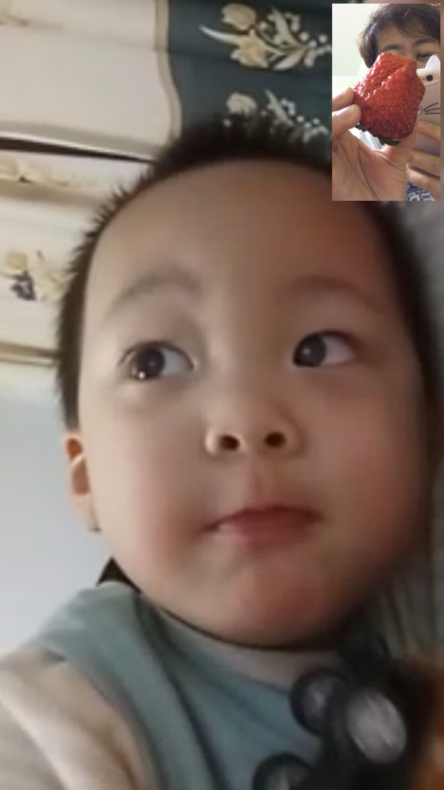

第一个标题：是世界(h1、h2、h3代表3个标题，也只有3个)
第二个标题：是海洋
第三个标题：是天空(h1、h2、h3代表3个标题，也只有3个)
第一个段落：p代表段落，不分1、2、3。
跳转到id属性tip49行的位置
hr 标签用来定义水平线：。
这是一个链接
创建图片链接:

无边框的图片链接:
单机访问菜鸟教程!
如果你将 target 属性设置为 "_blank", 链接将在新窗口打开。
没有该设置就在本窗口跳转。
My favorite color is blue red!
文本显示为两行,超过部分隐藏并使用省略号
修改 width 属性查看效果。
id属性tips就是一个书签记号，在HTML文档中是不显示的
访问有用的提示部分